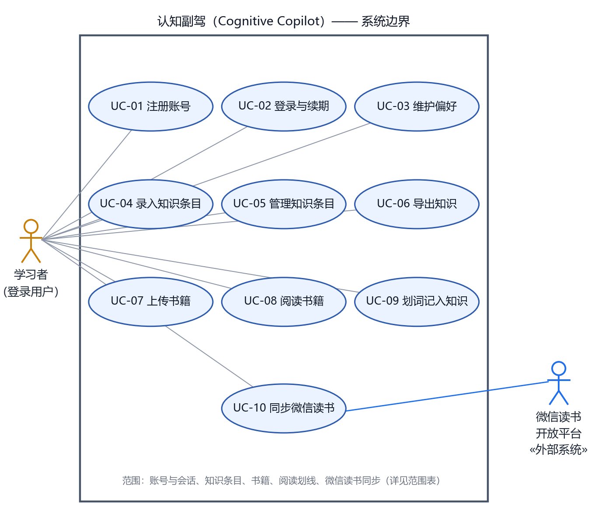
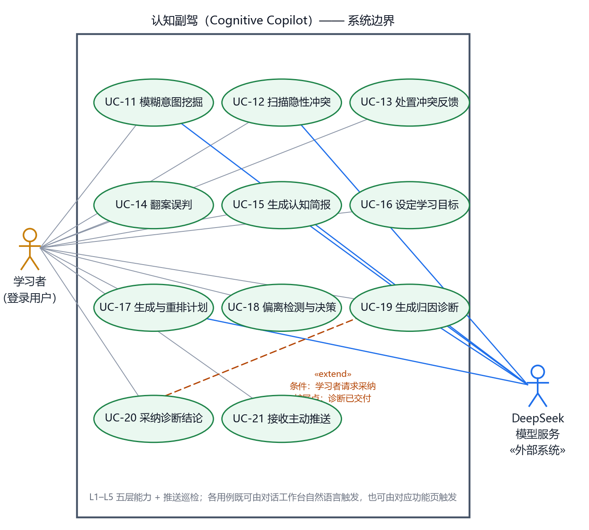
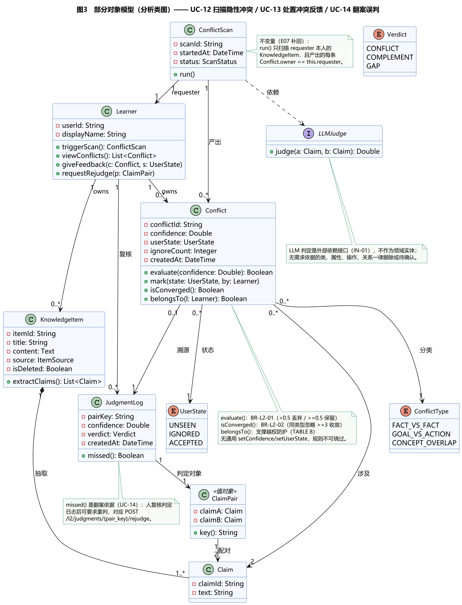
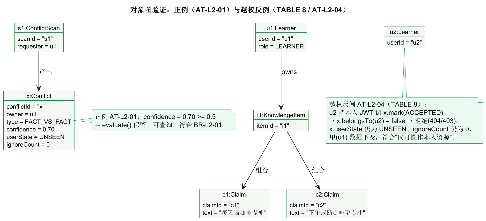

本报告对「认知副驾」项目做一次需求分析建模：先用用例模型回答"谁为了什么目标与系统交互"，再用部分对象模型（概念类／分析类）回答"哪些对象共同完成该目标"。全部结论标注证据编号；无依据的类、属性、操作、关系一律删除或列为待确认，不以 AI 推断补成事实。
一、建模范围与方法
1.1 项目与选题
项目：认知副驾（Cognitive Copilot）——个人知识学习 AI 智能体。一句话定位：信息系统帮你"管住"已知；认知副驾帮你"照亮"未知，并"逼你"修正。
本次建模的两层范围（两层不同，避免混淆）：
| 层 | 覆盖范围 | 理由 |
|---|---|---|
| 用例模型 | 项目级：账号偏好、知识资产、阅读接入、L1–L5 认知能力、推送巡检 | 用例模型回答"系统外部可观察行为"，须覆盖完整系统边界，否则边界与参与者无从判断（课件 P09–P12） |
| 对象模型 | 部分：只展开 L2 关联层的三个关键用例（UC-12／UC-13／UC-14） | 课件要求"选一个关键用例"深入（第 4 课 P54）；对象模型按用例展开才不至于沦为"名词罗列" |
为什么选 L2 作为对象模型的展开用例：L2 隐性冲突检测是项目"主动性"的起点（从"存"到"照"的第一跳），且它同时具备状态机、可判真假的数值规则、跨对象一致性、越权边界四类建模难点——最能检验模型是否真正表达了约束，而不是只画了几个框。本报告沿用第 3 课作业已冻结的 Spec 编号（IN-01／OUT-01／BR-L2-01／BR-L2-02／TABLE 8），使三份作业共用一套证据链。
1.2 方法主线
| 阶段 | 依据 | 本报告落点 |
|---|---|---|
| 系统边界 → 参与者 → 用户目标 → 用例关系与描述 | 第 3 课 P03、P09–P46 | 第二章 2.1–2.6 |
| 先冻结人工 Spec，再生成／审查／修订 AI 模型 | 第 3 课 P48–P53 | 第二章 2.7、第四章 4.1–4.2 |
| 从用例 Spec 进入对象模型；候选类 → CRC → 分析类图 | 第 4 课 P05、P27–P39 | 第三章 3.1–3.4 |
| 规则由实体保护、关系表达业务含义、追踪与验收 | 第 4 课 P17/P22、P46–P52 | 第三章 3.5–3.7 |
两条主线在本报告里首尾相接：Spec（证据）→ 用例模型（谁做什么）→ 对象模型（谁承担职责）→ 追踪矩阵（证据回到每一行）。
1.3 证据规则（动笔红线）
- 范围只能来自项目决策，不能来自"别的产品都有"（第 3 课 P12）。
- 无需求依据的类、属性、操作、关系只能删除或列为待确认（第 4 课 P07）。
- 规则必须可判真假，含边界值；模糊表述（"内容不能太多"）不算规则（第 3 课 P44）。
- 业务变更与模型修订走不同审批路径：模型写错了按已有 BR 改模型；想改规则值则须需求负责人批准并升级 Spec 版本（第 3 课 P53）。
二、用例模型
2.1 系统边界与范围
系统的范围与非范围由人（项目决策）设定，不由 AI 推断。下表每行给出真实来源，可逐条核查。
范围（IN）
| 编号 | 内容 | 真实来源 |
|---|---|---|
| IN-01 | 对话工作台：用户以自然语言下达意图，系统判定意图并分发到对应能力，结果以卡片写回会话 | web/app.html＋app/agent/router.py／copilot.py／turns.py；端点 POST /api/v1/agent/chat |
| IN-02 | 知识资产：知识条目录入、检索、更新、软删除、导出；条目向量化以支持语义检索 | app/api/endpoints/knowledge.py（POST/GET/PATCH/DELETE /items、GET /stats、GET /export） |
| IN-03 | 阅读接入：本地书籍上传（.txt/.epub/.pdf）与滚动阅读、划词记入知识；微信读书只读同步划线／想法／书评 | books.py（上传／章节／进度／笔记）、weread.py（GET /status、POST /sync） |
| IN-04 | 五层认知能力：L1 模糊意图挖掘、L2 隐性冲突检测、L3 认知简报与追问、L4 计划与偏离修正、L5 归因诊断 | l1.py–l5.py 端点；《认知副驾.md》五层能力梯度表 |
| IN-05 | 主动推送与偏好：站内推送任务的生成与投递确认；推送频率偏好；同类忽略收敛 | push.py（GET /jobs、POST /jobs/{id}/delivered）、preferences.py（GET/PUT） |
非范围（OUT）
| 编号 | 内容 | 真实来源 |
|---|---|---|
| OUT-01 | L2 不自动修改／删除用户的知识条目或笔记原文——冲突只提醒、给建议，内容变更由用户人工完成 | 第 3 课作业 H0 决策；代码证据：l2.py 仅有扫描／列表／状态／判定日志四类端点，无写知识条目接口 |
| OUT-02 | 不做内容创作与协作：不提供富文本编辑器、多人协作、内容公开发布与社交 | docs/需求分析文档.md 1.3「明确不做」；前端仅 13 个业务页，无编辑器／协作模块 |
| OUT-03 | 不接无官方开放接口的第三方平台（如番茄小说）：无官方接口的"API"多为逆向，违反服务条款且有版权风险 | README.md「微信读书同步」节明确不接番茄小说 |
| OUT-04 | 不做外部推送渠道：当前推送是站内任务（PushJob），不含邮件／短信／App 推送 | push.py 只有任务列表与投递确认；push_log.py 记录渠道字段但无邮件／短信适配器 |
说明：OUT-04 与《需求分析文档》2.2「推送通道（App 通知／SMTP 邮件）」不一致——文档是规划口径，代码是当前事实。按"证据优先于愿望"，本报告以代码事实为准，并把渠道扩展列入第四章待确认清单。
2.2 参与者识别
参与者是系统以外、需要与系统交互的外部实体。系统内部的定时 worker、向量索引、模型网关、数据库都是实现，不自动成为运行时角色（第 3 课 P20）。
参与者审查表
| 候选 | 判定 | 依据 |
|---|---|---|
| 学习者（登录用户） | 保留：人事角色，知识所有者 | 所有业务端点均要求 JWT 登录（app/api/deps.py）；仓储层按 user_id 强制过滤 |
| 微信读书开放平台 | 保留：真实外部交互服务 | weread.py 调用官方 Skills 接口读取用户划线／想法（只读） |
| DeepSeek 模型服务 | 保留：真实外部交互服务 | app/llm/gateway.py 按 KEY 构建供应商链；L1/L2/L3/L4/L5 均产生真实外部调用 |
| 定时调度器 / worker | 不据此添加 | 系统内部实现（app/workers/），非外部实体 |
| 模型网关、向量索引、数据库 | 不据此添加 | 内部实现 |
| AI 建模助手 | 不据此添加 | 开发期工具，不是运行时角色 |
| 管理员 / 访客 | 不添加 | 无范围或权限需求：系统无角色分级，也无未登录可访问的业务页 |
角色目标表
| 角色 | 目标 | 资源与权限（对谁的资源可操作） | 依据 |
|---|---|---|---|
| 学习者 | 把收藏的碎片转成可调用的认知：找回遗忘的内容、发现认知矛盾、被追问、计划被纠偏、病根被诊断 | 仅可操作本人 user_id 名下的一切资源（知识条目、书籍、冲突、目标、计划、诊断、推送）；不可访问或修改他人任何数据 | JWT 解出 user_id 并按其过滤；仓储层结构性过滤构成第二道防线 |
| 微信读书开放平台 | 提供用户本人的划线、想法、书评与阅读进度（只读） | 不判断本系统数据归属；不提供书籍正文 | weread.py 仅 GET /status、POST /sync 两个端点，且只写本系统知识库 |
| DeepSeek 模型服务 | 提供推理、判定、生成能力 | 不持有用户身份，不直接读写用户资源；输入输出均由本系统控制 | gateway.py 为唯一收口点，业务层不感知供应商细节 |
2.3 用例识别与粒度
用例的判据是有价值且完整的用户目标，不是界面动作，也不是内部步骤（第 3 课 P27）。据此先剔除三类伪用例：
- 界面动作："点击导出按钮""展开全文""拖滑块记录进度"——都是某用例基本流里的步骤。
- 内部步骤："提取主张""LLM 判定""向量化"——写入相应用例的基本流，不单独成用例。
- 交互渠道："打开对话工作台"——对话是渠道，不是目标；同一个目标既可由对话触发、也可由功能页触发。
用例清单（21 项）
| 编号 | 用例名称 | 主参与者 | 触发渠道 | 依据 |
|---|---|---|---|---|
| UC-01 | 注册账号 | 学习者 | 登录页 | POST /api/v1/auth/register |
| UC-02 | 登录与续期会话 | 学习者 | 登录页 | POST /auth/login、POST /auth/refresh |
| UC-03 | 维护个人偏好 | 学习者 | 设置页 / 对话 | GET/PUT /api/v1/preferences |
| UC-04 | 录入知识条目 | 学习者 | 知识库页 / 对话 | POST /knowledge/items |
| UC-05 | 管理与检索知识条目 | 学习者 | 知识库页 / 对话 | GET/PATCH/DELETE /knowledge/items |
| UC-06 | 导出知识 | 学习者 | 知识库页 | GET /knowledge/export |
| UC-07 | 上传书籍 | 学习者 | 书架页 / 对话 | POST /api/v1/books |
| UC-08 | 阅读书籍 | 学习者 | 阅读器页 | GET /books/{id}/chapter/{i}、PATCH /books/{id}/progress |
| UC-09 | 划词记入知识 | 学习者 | 阅读器页 | POST /books/{id}/notes |
| UC-10 | 同步微信读书笔记 | 学习者、微信读书开放平台 | 书架页 / 对话 | POST /api/v1/weread/sync |
| UC-11 | 模糊意图挖掘定位 | 学习者、DeepSeek 模型服务 | 对话 / 挖掘页 | POST /api/v1/l1/mine |
| UC-12 | 扫描隐性冲突 | 学习者、DeepSeek 模型服务 | 对话 / 冲突页 | POST /api/v1/l2/scan |
| UC-13 | 查看与处置冲突 | 学习者 | 冲突页 / 对话 | GET /l2/conflicts、PATCH /l2/conflicts/{id}/state |
| UC-14 | 翻案误判 | 学习者 | 冲突页 / 对话 | GET /l2/judgments、POST /l2/judgments/{pair_key}/rejudge |
| UC-15 | 生成认知简报与深度追问 | 学习者、DeepSeek 模型服务 | 对话 / 简报页 | POST /api/v1/l3/brief、POST /l3/question |
| UC-16 | 设定学习目标 | 学习者 | 目标页 / 对话 | POST /api/v1/l4/goals |
| UC-17 | 生成与重排学习计划 | 学习者、DeepSeek 模型服务 | 目标页 / 对话 | POST /l4/goals/{id}/plan、GET /l4/plan |
| UC-18 | 检测行为偏离并决策 | 学习者 | 对话 / 目标页 | POST /l4/deviation/check、POST /l4/deviation/{plan_id}/decision |
| UC-19 | 生成归因诊断 | 学习者、DeepSeek 模型服务 | 对话 / 诊断页 | POST /api/v1/l5/diagnosis |
| UC-20 | 采纳诊断结论 | 学习者 | 诊断页 / 对话 | POST /l5/diagnosis/{id}/decision |
| UC-21 | 接收主动推送 | 学习者 | 通知页 | GET /api/v1/push/jobs、POST /push/jobs/{id}/delivered |
用例编号在全报告内唯一且稳定：后续对象模型、追踪矩阵、验收例均引用这套 UC 编号（第 3 课 P51 要求编号稳定）。
2.4 用例图
用例与参与者较多，按"域"拆成两张图呈现；两图合起来构成完整的系统用例模型。


读图要点：
- 边界：图内的一切都是"系统要自己做完"的事；模型服务与微信读书平台在边界外，系统只是调用它们。
- 参与者：人事角色只有一个（学习者）；两个外部系统参与者只与真正调用它们的用例相连——DeepSeek 只连 UC-11／12／15／17／19，不连纯本地读写的用例。
- 渠道不是用例：所有学习者用例都可由对话工作台或对应功能页触发，渠道差异不改变用例（第 3 课 P27）。
2.5 用例关系审查
课件要求"先读规则，再看箭头"，关系必须同时满足方向正确与业务条件成立（第 3 课 P35、P37）。下表逐条审查本项目的候选关系，包括被否决的候选——否决同样要给出证据。
| 候选关系 | 判定 | 证据 |
|---|---|---|
| UC-10「同步微信读书笔记» include »UC-04「录入知识条目」 | 不画 | 录入知识条目是同步基本流里的必需步骤（同步产物即知识条目），写入 UC-10 的步骤与后置条件即可，不必逐项抽为 include（第 3 课 P37：必需检查不必抽 include） |
| UC-09「划词记入知识」include UC-04 | 不画 | 同上：落库是 UC-09 基本流的组成部分，不是可复用的独立目标 |
| 全部业务用例 include UC-02「登录」 | 不画 | 已登录是前置条件，不是每次都要重新执行的用例——"不等于每次上传都 include 登录"（第 3 课 P32） |
| UC-12「扫描隐性冲突」include 「提取主张」／「LLM 判定」 | 不画 | 二者是扫描的内部步骤；界面动作与内部步骤都不是独立用例（第 3 课 P27） |
| UC-04「录入知识条目」include 「创建分享」类关系 | 不存在 | 本项目无分享能力（OUT-02 明示非范围）；对照第 3 课 P32 的网盘反例 |
| UC-20「采纳诊断结论」extend UC-19「生成归因诊断」 | 保留 | 条件：学习者请求采纳；扩展点：诊断已交付。UC-19 不采纳也完整（诊断已交付），采纳是条件触发的可选行为，方向为扩展用例→基本用例（第 3 课 P33–P34） |
| UC-18「检测行为偏离并决策」extend UC-17「生成与重排计划」 | 不画 | 决策同意后重排计划是 UC-18 的备选流，属简单备选，直接写入用例描述即可（第 3 课 P34：可选操作不必一律画 extend） |
| 参与者泛化（如"学习者"泛化出"重度用户"） | 不画 | 无已确认的差异权限或目标；同一人可兼任角色不能推出角色继承（第 3 课 P26） |
| 用例泛化（如"生成计划"泛化出"生成周计划／月计划"） | 不画 | 无差异规则或差异状态；泛化只在出现已确认的差异行为时才建（第 4 课 P39） |
审查结论：本模型只保留 1 条关系（UC-20 extends UC-19），其余 8 条候选全部否决并留有证据。关系少不是缺陷——课件反复强调"不是强行拆用例的理由"；强行加 include／extend 只会制造假依赖。
2.6 关键用例描述
选取三个关键用例给出完整描述。规则：按行编号、写参与者意图与系统责任、异常流回到出错步骤并说明状态结果（第 3 课 P40–P46）。
UC-11 模糊意图挖掘定位
| 描述项 | 内容 |
|---|---|
| 用例名称 | 模糊意图挖掘定位 |
| 用例描述 | 学习者只有模糊线索（颜色、印象、大意）时，系统通过多轮追问逐步澄清，最终定位到具体知识条目 |
| 参与者 | 学习者（主动发起）、DeepSeek 模型服务（语义匹配） |
| 触发 | 学习者输入含模糊指代、缺关键词或感官描述的片段 |
| 前置条件 | 学习者已登录且知识库非空 |
| 后置条件 | 学习者获得一个或多个定位结果；若追问过，追问过程记入会话 |
| 基本操作流程 | ① 学习者输入碎片线索（如"橙色封面，好像讲拖延症的"）；② 系统对本人知识库做语义检索，产生候选匹配集合；③ 候选唯一且相关度足够 → 直接返回该条目与阅读历史提醒；④ 候选不唯一 → 系统发起一轮追问，请学习者补充一个可区分的维度；⑤ 学习者回答；⑥ 系统据此收窄候选集；⑦ 重复 ④–⑥ 直至候选收敛或达到追问上限；⑧ 系统返回结果列表，标注每条命中依据 |
| 可选操作流程 | ②a 线索不足以产生任何候选 → 不硬答，直接进入追问（④）。④a 连续两轮追问后学习者仍无法区分 → 降级返回"最接近的前 N 条"，并说明这是相似度兜底而非确定命中。②b 知识库为空 → 提示先录入内容，不再追问 |
| 对应规则 | BR-01、BR-03 |
UC-12 扫描隐性冲突
| 描述项 | 内容 |
|---|---|
| 用例名称 | 扫描隐性冲突 |
| 用例描述 | 系统对学习者本人的知识库做一次冲突扫描：提取主张、配对、逐对判定，产出带置信度与类型的冲突记录，并按规则过滤低置信结果 |
| 参与者 | 学习者（触发）、DeepSeek 模型服务（判定） |
| 触发 | 学习者在对话或冲突页主动发起扫描 |
| 前置条件 | 已登录；本人知识库中至少有两条可提取主张的条目 |
| 后置条件 | 新增冲突记录（可能为 0 条）均归属本次请求者；本次扫描的每一对判定都写入判定日志，不论最终是否入库 |
| 基本操作流程 | ① 学习者发起扫描；② 系统取本人知识库条目，按规则截取待分析范围；③ 系统为每条目提取核心主张，超出上限的部分本轮不参与并记录；④ 系统按语义相似度生成候选主张对，取前 N 对；⑤ 系统调用模型服务逐对判定，得到类型与置信度；⑥ 系统对每对结果执行置信度门槛判定，低于门槛的丢弃（不入库、不推送），达标的保留；⑦ 达标结果写入冲突记录，状态置为"未查看"；⑧ 系统向学习者返回本次扫描摘要（扫描条目数、候选对数、入库冲突数） |
| 可选操作流程 | ②a 可分析条目不足两条 → 直接返回"暂无可比对内容"，不产生任务。③a 提取主张失败（模型不可用）→ 本次扫描标记失败，已产生的部分结果不写入，提示可稍后重试。⑤a 判定调用超时／返回不可解析 → 该对判定记为"未得出"，不写入冲突记录，但写入判定日志以便复核。⑥a 全部候选对均低于门槛 → 本次入库 0 条，正常返回（不是错误） |
| 对应规则 | BR-01、BR-02、BR-03、BR-06、BR-08 |
UC-17 生成与重排学习计划
| 描述项 | 内容 |
|---|---|
| 用例名称 | 生成与重排学习计划 |
| 用例描述 | 依据学习者已设定的目标，生成周维度的任务计划；当学习者接受偏离调整建议时，按新路径重排计划 |
| 参与者 | 学习者（目标输入与确认）、DeepSeek 模型服务（拆解） |
| 触发 | 学习者对某个目标请求生成计划；或学习者接受 UC-18 的调整建议 |
| 前置条件 | 已登录且存在一个有效目标（含期限） |
| 后置条件 | 存在一份生效计划，其任务项与目标关联；若为重排，旧计划被新计划取代且保留历史 |
| 基本操作流程 | ① 学习者请求为目标生成计划；② 系统取目标描述、期限与本人近期学习行为作为上下文；③ 系统调用模型服务把目标拆解为周维度任务项；④ 系统回传计划草案（任务、周次、预期进度）供学习者查看；⑤ 学习者确认（或直接接受）；⑥ 系统写入计划与任务项，成为当前生效计划；⑦ 系统返回计划摘要 |
| 可选操作流程 | ③a 模型不可用 → 不生成空计划，提示稍后重试，目标本身不受影响。⑤a 学习者不确认并要求修改 → 回到③，把修改意见作为新输入重新拆解（最多两轮，避免无限循环）。重排分支（由 UC-18 触发）：学习者接受偏离调整 → 系统按新路径重排剩余任务，已完成任务保留其历史状态，旧计划归档 |
| 对应规则 | BR-04、BR-05、BR-07 |
2.7 业务规则与验收例
规则必须可判真假，含边界值与失败路径（第 3 课 P44、P47）。数值取自项目实现初值（app/core/config.py），标注 ⚠ 者为待冻结：冻结为正式需求值还是保持可配置，需需求负责人人工确认。
| 编号 | 规则（可判真假） | 判真示例 | 判假示例 | 真实来源 |
|---|---|---|---|---|
| BR-01 | 冲突置信度 < 0.5 的记录直接丢弃（不入库、不推送）；≥ 0.5 保留 | 置信度 0.50 的冲突可被查询到 | 置信度 0.49 的冲突出现在冲突列表 | l2_min_confidence = 0.5（⚠ 待冻结） |
| BR-02 | 同一学习者对同类型冲突累计"忽略" ≥ 3 次后，该类型不再主动推荐 | 第 3 次忽略后该类型不再出现在主动推荐中 | 第 2 次忽略后即不再推荐 | l2_ignore_suppress_threshold = 3（⚠ 待冻结） |
| BR-03 | 每次读写冲突、判定日志、计划等资源，服务端都核验归属；非本人资源一律拒绝 | 本人请求返回 200 并生效 | 他人请求返回 404/403 且数据不变 | app/api/deps.py 解出 user_id；仓储层按 user_id 过滤 |
| BR-04 | 单次扫描的候选判定对不超过 20 对；单条目提取主张不超过 5 条 | 候选 25 对时，只判定前 20 对，其余本轮不参与 | 候选 25 对时全部判定 | config.py 初值（⚠ 待冻结） |
| BR-05 | 计划重排时已完成任务的历史状态不被改写，旧计划归档而非删除 | 重排后仍可查到上一版计划与其完成记录 | 重排后旧计划消失 | learning_plan.py／plan_task.py 结构；l4.py 决策端点 |
| BR-06 | L2 只读：全流程不产生任何对知识条目的写操作 | 扫描后被扫描条目的 updated_at 不变 | 扫描后条目内容被"自动修正" | OUT-01；l2.py 无知识条目写端点 |
| BR-07 | 每次 LLM 判定均写入判定日志（含配对键、置信度、结论），供事后复核与翻案 | 一次判定对应一条日志记录 | 判定结果只出现在冲突表里，无法追溯 | l2_judgment_log.py；GET /l2/judgments |
| BR-08 | 模型不可用时不产生"半成品"：已部分完成的结果不写入；同时给出明确失败提示而非静默成功 | 模型超时后冲突表无新增记录 | 模型超时后写入残缺的冲突记录 | gateway.py 重试与错误上抛；turns.py 前提检查 |
验收例
| 编号 | 测试条件 | 预期结果 | 依据 |
|---|---|---|---|
| AT-01 | 冲突置信度 = 0.50 | 入库且可查询 | BR-01（边界含） |
| AT-02 | 冲突置信度 = 0.49 | 不入库、不出现在列表 | BR-01（边界不含） |
| AT-03 | 同类型冲突第 3 次"忽略" | 该类型不再主动推荐 | BR-02 |
| AT-04 | 学习者乙持本人 JWT 请求修改甲（他人）的冲突状态 | 请求被拒绝（404/403）；甲该冲突状态与忽略计数均不变；系统不产生任何修改痕迹 | BR-03（越权失败例，TABLE 8） |
| AT-05 | 单次扫描产生 25 组候选对 | 只判定 20 对，其余不参与；返回摘要中说明 | BR-04 |
| AT-06 | 计划重排后查询上一版计划 | 可查到，且其任务完成状态未被改写 | BR-05 |
| AT-07 | 模型服务不可用（断开 KEY）时发起扫描 | 冲突表无新增；学习者看到明确失败提示；判定日志亦无伪造记录 | BR-08 |
2.8 用例层追踪矩阵
每一行把"用例—规则—验收—代码"四者对齐，任一项缺失即说明该用例的建模不完整（第 3 课 P47）。
| 用例 | 关键规则 | 验收例 | 代码证据 |
|---|---|---|---|
| UC-01／UC-02 | — | — | auth.py（register／login／refresh） |
| UC-03 | — | — | preferences.py |
| UC-04／UC-05／UC-06 | BR-03 | AT-04（越权） | knowledge.py |
| UC-07／UC-08／UC-09 | BR-03 | AT-04 | books.py（上传／章节／进度／笔记） |
| UC-10 | BR-03、BR-06 | AT-04 | weread.py（只读同步，不写外部平台） |
| UC-11 | BR-01、BR-03 | AT-04 | l1.py、l1_orchestrator.py |
| UC-12 | BR-01、BR-02、BR-04、BR-06、BR-08 | AT-01、AT-02、AT-05、AT-07 | l2.py、l2_orchestrator.py、config.py |
| UC-13 | BR-01、BR-02、BR-03 | AT-03、AT-04 | l2.py（PATCH /conflicts/{id}/state） |
| UC-14 | BR-03、BR-07 | AT-04 | l2.py（POST /judgments/{pair_key}/rejudge）、l2_judgment_log.py |
| UC-15 | BR-03 | — | l3.py、l3_orchestrator.py |
| UC-16／UC-17 | BR-05、BR-08 | AT-06、AT-07 | l4.py、l4_orchestrator.py |
| UC-18 | BR-03、BR-05 | AT-04、AT-06 | l4.py（deviation/check、decision） |
| UC-19／UC-20 | BR-03 | AT-04 | l5.py、l5_orchestrator.py |
| UC-21 | BR-03、BR-02（收敛） | AT-03 | push.py、push_service.py |
三、部分对象模型（概念类／分析类）
3.1 建模范围
本层只对 L2 关联层的三个关键用例展开：UC-12 扫描隐性冲突（产出）、UC-13 查看与处置冲突（反馈）、UC-14 翻案误判（复核）。理由：三者共用同一组领域对象（条目、主张、冲突、扫描、判定日志），且正好覆盖"产出—使用—纠正"的完整生命周期。
3.2 候选对象登记表
从 Spec 证据出发筛选候选对象。名词只是候选，CRC 与规则负责筛选（第 4 课 P28）。
| 候选（名词／术语） | 决定 | 依据 |
|---|---|---|
| 学习者 / 用户 | Learner 实体（角色对象） | 角色目标表；归属过滤（BR-03） |
| 知识条目 / 笔记 | KnowledgeItem 实体 | IN-02；条目是主张的来源（UC-12 步骤②③） |
| 主张 | Claim 实体 | UC-12 步骤③"提取核心主张" |
| 冲突记录 | Conflict 核心实体（规则保护） | UC-12 步骤⑥⑦；BR-01／BR-02 |
| 冲突类型 | ConflictType 枚举（值对象） | BR-02 按类型收敛，需类型判别 |
| 用户状态（未查看／忽略／采纳） | UserState 枚举（值对象） | UC-13 状态迁移；BR-02 |
| 一次扫描 | ConflictScan 实体（编排） | UC-12 步骤①；扫描有身份、时间与状态 |
| 判定日志 | JudgmentLog 实体 | BR-07；UC-14 翻案依据 |
| 主张对 | ClaimPair 值对象 | BR-07 的配对键；值相等即同一对 |
| LLM 判定 | LLMJudge 接口（外部依赖） | UC-12 步骤⑤；属外部服务依赖，不是领域实体 |
| 系统 / 页面 / 数据库 | 移出领域对象模型 | 第 4 课 P28：非领域概念 |
| 通知 / 推送 | 删除（本轮） | OUT-04：不在 L2 范围内的行为；推送由 UC-21 单独承担 |
| 扫描服务 / L2Service | 不作为类 | 第 4 课 P48 E05：无需求依据的技术设计，且导致贫血对象 |
3.3 CRC 表
CRC 写业务责任，不写"提供全部 getter／setter"（第 4 课 P31）。
| 类 | 责任 | 协作者 |
|---|---|---|
| Learner | 发起扫描；查看本人冲突；对冲突给出反馈；对判定发起复核 | ConflictScan、Conflict、JudgmentLog |
| KnowledgeItem | 保存条目内容与来源；提供可分析文本；支持软删除后不再参与扫描 | Claim |
| Claim | 保存一条可判真假的主张文本 | KnowledgeItem |
| Conflict | 保证置信度门槛与收敛规则；维护用户状态与忽略计数；判定归属 | Claim、ConflictType、UserState、JudgmentLog |
| ConflictScan | 编排一次扫描：取条目、提主张、配对、逐对判定、过滤、落库 | Learner、KnowledgeItem、LLMJudge、Conflict |
| JudgmentLog | 记录每次判定的配对、置信度与结论；支持事后复核与翻案 | ClaimPair、Conflict |
| LLMJudge（接口） | 对一对主张给出类型与置信度 | — |
3.4 分析类图

关系与多重性说明（每条都用一句业务语言解释，第 4 课 P34–P36）
| 关系 | 多重性 | 业务含义 | 依据 |
|---|---|---|---|
| Learner — KnowledgeItem | 1 ↔ 0..* | 一个学习者拥有零到多条知识条目；一条条目恰好属于一个学习者 | BR-03 |
| Learner — Conflict | 1 ↔ 0..* | 一个学习者拥有零到多条冲突记录；一条冲突恰好归属一个学习者 | BR-03、UC-12 |
| KnowledgeItem — Claim | 1（组合）↔ 1..* | 一条条目正好由一条或多条主张构成；条目不存在时其主张无独立意义 | UC-12 步骤③ |
| Conflict — Claim | 0..* ↔ 2 | 一条冲突恰由两条主张构成；一条主张可出现在多条冲突中 | UC-12 步骤⑤ |
| Conflict — ConflictType | 0..* ↔ 1 | 一条冲突恰好属于一个类型（用于同类型收敛） | BR-02 |
| Conflict — UserState | 0..* ↔ 1 | 一条冲突恰有一个用户状态 | UC-13 |
| ConflictScan — Learner | 1 ↔ 1 | 一次扫描恰好由一个学习者发起（请求者） | BR-03 |
| ConflictScan — Conflict | 1 ↔ 0..* | 一次扫描产出零到多条冲突 | UC-12 步骤⑦ |
| ConflictScan ⇢ LLMJudge | 依赖 | 一次扫描临时使用外部判定服务 | UC-12 步骤⑤ |
| Conflict — JudgmentLog | 0..1 ↔ 1 | 一条冲突可溯源到一条判定日志 | BR-07 |
| JudgmentLog — ClaimPair | 1 ↔ 1 | 一条判定日志恰好记录一对主张的判定 | BR-07、UC-14 |
| ClaimPair — Claim | 1 ↔ 2 | 一个主张对恰由两条主张构成 | BR-07 |
| Learner — JudgmentLog | 1 ↔ 0..* | 一个学习者可对其名下的判定日志发起复核 | UC-14、BR-03 |
刻意不画的关系（同样要留证据）：
| 候选关系 | 决定 | 理由 |
|---|---|---|
| KnowledgeItem ◆— Claim 之外的"级联删除" | 不画 | 软删除只改条目状态，不物理删除主张（BR-06 只读原则、软删策略） |
| ConflictScan ●— Conflict（组合） | 不画 | 扫描结束后冲突长期独立存在，不随扫描生命周期销毁；组合会误导级联删除（第 4 课 P37） |
| Learner ◆— ConflictScan（组合） | 不画 | 同上：扫描记录不因学习者登出而消失 |
| Conflict — Notification | 不画 | OUT-04：本轮不建模推送行为 |
3.5 属性与操作的设计说明
三个高频错误在本模型里被显式避免（第 4 课 P12、P17、P22）：
- 不用外键式 ID 替代关系。分析类图里没有
ownerId／claimAId／claimBId这类字符串字段——对象之间的联系由关联与多重性表达；ID 只在实体内部用于标识自身。 - 状态与类型用枚举／值对象，不用裸 String。
UserState、ConflictType、Verdict是枚举；ClaimPair是值对象（按值相等），因为"同一对主张"必须能被稳定识别（BR-07 的配对键）。 - 规则由实体操作保护，不暴露通用 setter。
Conflict上没有setConfidence/setUserState；取而代之的是：
evaluate(confidence)：执行门槛判定（BR-01）；mark(state, by)：状态迁移并核验操作者归属（BR-03）；isConverged()：判断是否已达忽略收敛（BR-02）；belongsTo(l)：归属校验，支撑越权防护。
这四条操作合起来保证：绕过规则的路径在模型上不存在，而不是靠调用方自觉。
作用域：所有属性均为对象作用域（每条冲突的置信度、状态各不相同）；枚举常量为类层次共享；不设静态计数器（应查询统计，第 4 课 P25）。
3.6 对象图验证
类图必须能解释正例与反例，尤其是失败路径（第 4 课 P37、P52）。

- 正例：
u1拥有条目i1（含主张c1、c2），由u1发起的扫描s1产出冲突x（归属u1，置信度 0.70 ≥ 0.5）。x.evaluate(0.70)保留 → 可查询，符合 AT-01／BR-01。 - 反例：
u2对x调用mark(ACCEPTED)。x.belongsTo(u2) = false→ 拒绝（404/403），x.userState仍为 UNSEEN、ignoreCount仍为 0、u1的数据不变，符合 AT-04／BR-03。
反例能通过，说明"归属校验"不是写在文档里的口号，而是模型里可执行的约束。
3.7 对象层追踪矩阵
反向检查：图中每个类、属性、操作、关系都必须有依据，无依据则删除或待确认（第 4 课 P51）。
| 模型元素 | 对应职责／规则 | 依据 |
|---|---|---|
Learner.triggerScan | 发起扫描（仅本人条目） | UC-12 步骤① |
Learner.viewConflicts | 查看本人冲突 | UC-13、BR-03 |
Learner.giveFeedback | 对冲突给出状态反馈 | UC-13 |
Learner.requestRejudge | 对判定发起复核 | UC-14 |
KnowledgeItem.extractClaims | 提供可分析文本并抽取主张 | UC-12 步骤③ |
KnowledgeItem.isDeleted | 软删除后不再参与扫描 | 软删策略 |
Conflict.evaluate | 置信度门槛（< 0.5 丢弃 / ≥ 0.5 保留） | BR-01 |
Conflict.isConverged | 同类型忽略 ≥ 3 次收敛 | BR-02 |
Conflict.belongsTo | 归属校验 | BR-03、AT-04 |
Conflict.mark | 状态迁移并核验操作者 | UC-13、BR-03 |
Conflict.confidence／userState／ignoreCount | 冲突判别所需的三个状态 | BR-01／BR-02 |
ConflictScan.run | 编排取条目→提主张→配对→判定→过滤→落库 | UC-12 步骤②–⑦ |
ConflictScan.status | 扫描状态（失败不写入半成品） | BR-08 |
JudgmentLog.missed | 翻案依据：人复核后要求重判 | UC-14、BR-07 |
ClaimPair.key | 判定配对的稳定标识 | BR-07 |
LLMJudge.judge | 外部判定能力 | UC-12 步骤⑤ |
ConflictType／UserState／Verdict | 类型与状态判别 | BR-01／BR-02／BR-07 |
| Notification／通知 | 已删除（本轮不建模） | OUT-04 |
L2Service 等无依据类 | 已删除 | 第 4 课 P48 E05 |
四、过程记录与人机责任
4.1 两轮 AI 操作与三次人工检查
按第 3 课 P48 的 Spec Coding 流程留痕：两次生成、三次人工检查。本次实践的实际执行情况如下表。
| 阶段 | 谁负责 | 本次实际动作 | 留下的证据 |
|---|---|---|---|
| H0 冻结需求 | 人确认（组内） | 项目决策：范围 IN-01~IN-05、非范围 OUT-01~OUT-04、角色权限"仅本人资源"、规则 BR-01~BR-08 | 范围表、角色目标表、规则表（2.1／2.2／2.7） |
| A1 第一轮 AI | AI 生成 | 按已冻结 Spec 生成候选对象表、CRC 与分析类图初稿（第 4 课作业的 R1 初稿） | UML/diagrams/m1_first_object_model.puml |
| H1 人工审查 | 人定位并论证错误 | 逐条对照 Spec 审查初稿，产出 E01–E07 审查单（含证据编号、影响与修正方向） | 第 4 课作业第四章 H1 审查单 |
| A2 第二轮 AI | AI 依据审查单修订 | 只按 E01–E06 修订，保持编号不变；缺口列为待确认 | UML/diagrams/m2_second_object_model.puml |
| H2 追踪与验收 | 人逐项比对 | 用追踪矩阵与正反例验收；发现残留 E07（归属不变量缺失）→ 回到 A2 修订为 R2.1 | UML/diagrams/m3_final_object_model.puml、obj_verify.puml |
本报告在上述基础上补齐了第 3 课要求的用例侧证据：真实交互识别边界与参与者（2.1–2.2）、用户目标级用例清单（2.3）、用例关系审查（2.5）、编号用例描述（2.6）、可判真假的规则与验收例（2.7）。
4.2 人工决策记录
课件要求区分"模型修订"与"业务变更"，二者审批路径不同（第 3 课 P53、P68）。
| 情形 | 定性 | 处理 | 需更新 |
|---|---|---|---|
| AI 把置信度门槛写成"越高越好"之类无边界表述 | 模型修订 | 按已有 BR-01 修正模型与描述，Spec 版本不变 | 模型、用例描述、修改记录 |
| 想把门槛从 0.5 调到 0.6，或把忽略收敛从 3 次改为 5 次 | 业务变更 | AI 提出变更影响分析，由需求负责人人工批准后方可实施 | Spec 新版本、模型引用值、验收例边界值、追踪矩阵 |
| 想新增"自动修改用户笔记以消除冲突" | 业务变更（且与 OUT-01 冲突） | OUT-01 已排除；只能列为建议，未经批准不实施 | 待确认／建议列表 |
| 想接入无官方接口的第三方阅读平台 | 业务变更（且与 OUT-03 冲突） | 同上，列为建议 | 待确认／建议列表 |
原则：AI 能提出方案，不能代替需求负责人批准业务变化；无依据的类、属性、操作、关系只能删除或列为待确认（第 4 课 P07）。
4.3 待确认清单
下列 ⚠ 项不得由 AI 自行补成事实，需组内确认后方可写入正式 Spec（第 3 课 P57 任务④）。
- 规则数值是否冻结：BR-01 的 0.5、BR-02 的 3、BR-04 的 20／5 目前是代码初值（
config.py注明"实测后校准"）。冻结为需求值还是保持可配置？谁批准？ - "收敛"的确切语义：BR-02 的"不再主动推荐"是指该类型永久不再推荐，还是降频／降权？代码注释与需求表述需统一。
- 扫描触发方式：当前仅提供手动触发入口；是否存在定时自动扫描需求？若有，周期值待定，且需补充"学习者可关闭自动扫描"的权限规则。
- OUT-04 是否放开：是否需要邮件／外部推送渠道？《需求分析文档》2.2 曾规划邮件，但代码未实现——以哪一份为准需明确。
- 参与者的角色分级：当前无管理员、无访客，全部功能要求登录。是否存在"未登录可看简报"之类场景？
- UC-20 的扩展点边界：采纳诊断结论后自动生成计划任务——这属 UC-20 的后置动作还是应触发一个新的"计划生成"用例？本报告按 extend 处理并写入备选流，待评审确认。
- 软删除与冲突的关系：条目被软删除后，其历史冲突应保留、隐藏还是一并隐藏？当前模型按"保留历史"处理（BR-06），需确认。
五、交付物与课件页码对照
5.1 交付物清单
全部产物位于项目工作区，未触碰其他目录。
| 文件 | 类型 | 说明 |
|---|---|---|
需求分析建模_用例模型与对象模型_周宇航.docx | 文档（本文件） | 用例模型 + 部分对象模型 + 过程记录 |
UML/diagrams/uc1_knowledge.png | 图（位图） | 用例图（一）：账号与知识资产 |
UML/diagrams/uc2_capability.png | 图（位图） | 用例图（二）：五层认知能力与支撑 |
UML/diagrams/obj_partial_model.puml / .png / .svg | 图（源＋渲染） | 分析类图（PlantUML 源可二次编辑） |
UML/diagrams/obj_verify.puml / .png / .svg | 图（源＋渲染） | 对象图验证（正例 + 越权反例） |
UML/_draw_usecase.py | 脚本 | 用例图绘制脚本（可复现） |
UML/_extract_pdfs3.py、UML/_第3课_原文.txt | 脚本／文本 | 课件原文提取与留档（可核查引用页码） |
5.2 课件页码对照
| 课件 | 页脚 | 本报告采用的内容 | 对应章节 |
|---|---|---|---|
| 第 3 课 | P03 | 分析主线：边界→参与者→目标→关系与描述 | 1.2 |
| 第 3 课 | P04/P06 | 人机责任：人定需求、AI 生成、人审查 | 4.1 |
| 第 3 课 | P08 | 用例模型是 Spec 的一部分（图不能承载全部规则） | 1.2 |
| 第 3 课 | P09–P12 | 系统边界的定义与表示；范围来源是项目决策 | 2.1 |
| 第 3 课 | P13–P18 | 参与者定义与表示；外部系统用 «actor» 方框 | 2.2 |
| 第 3 课 | P20 | 角色目标表；内部实现不自动成为角色 | 2.2 |
| 第 3 课 | P22–P24 | 用例定义与特征；用例分析是功能分解技术 | 1.2 |
| 第 3 课 | P27–P28 | 用例粒度；从用例发现对象职责 | 2.3、3.1 |
| 第 3 课 | P32–P36 | include／extend／泛化的判据与方向 | 2.5 |
| 第 3 课 | P37 | 关系审查表：逐条给证据 | 2.5、3.4 |
| 第 3 课 | P40–P46 | 用例描述字段；基本流编号；异常流回到出错步骤 | 2.6 |
| 第 3 课 | P44 | 规则要可判真假；边界值示例 | 2.7 |
| 第 3 课 | P47 | 验收例与追踪（边界／越权／失效） | 2.7、2.8 |
| 第 3 课 | P48–P51 | H0/A1/H1/A2/H2 流程与提示纪律 | 4.1 |
| 第 3 课 | P53 | 人工决策：模型修订 vs 业务变更 | 4.2 |
| 第 3 课 | P57 | 课堂实践任务①–④ | 2.1–2.7、4.3 |
| 第 4 课 | P06 | 用例模型 vs 对象模型 | 1.1 |
| 第 4 课 | P07 | 人机责任；无依据的类／属性／操作／关系只能删除或待确认 | 1.3、3.7 |
| 第 4 课 | P12–P13 | 类图三区域；不放外键式 ID | 3.5 |
| 第 4 课 | P17/P22 | 属性筛选；操作要保护业务规则 | 3.5 |
| 第 4 课 | P27–P32 | 从 Spec 识别类；候选筛选；CRC；候选登记与决定 | 3.2、3.3 |
| 第 4 课 | P34–P38 | 关联／多重性／组合／泛化／依赖的业务含义 | 3.4 |
| 第 4 课 | P46–P52 | R1→H1（E 编号）→R2→追踪与验收 | 4.1 |
| 第 4 课 | P53 | OOA→OOD：分析类图不被技术层反向污染 | 3.5 |
| 第 4 课 | P54 | 项目任务：提交可复查的对象模型 | 第三章整体 |
5.3 一句话结论
用例模型回答"谁为了什么目标与系统交互"——本项目只有一个人类角色（学习者）与两个外部系统参与者，21 个用户目标级用例，通过关系审查只保留 1 条 «extend»；对象模型回答"哪些对象共同完成目标"——L2 的职责由 Conflict／KnowledgeItem／Claim／ConflictScan／JudgmentLog 五个领域对象分担，规则写在实体操作里而不是服务里，越权与门槛在模型上不可绕过，并由对象图的正例与反例共同验证。